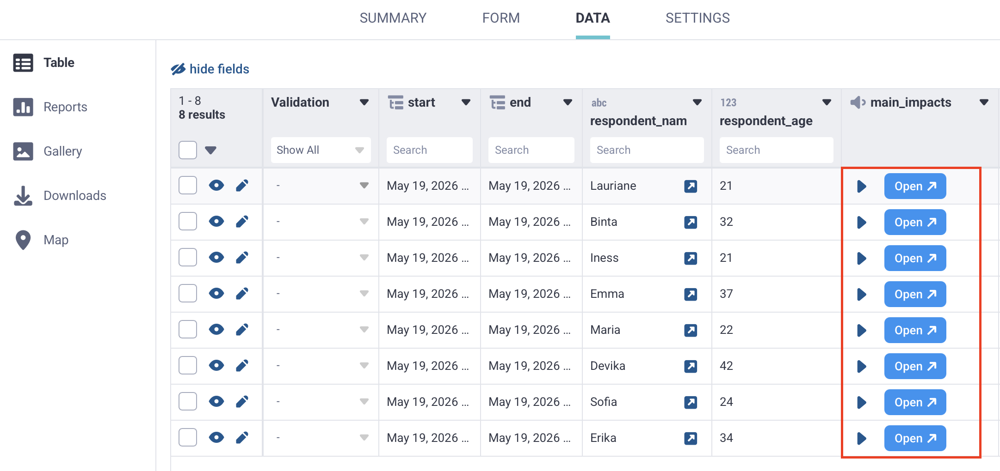

Busca en nuestra documentación, explora nuestros recursos y visita nuestro Foro de la Comunidad para obtener información más detallada
Última actualización: 22 Jun 2026
El análisis cualitativo ayuda a convertir las respuestas abiertas en resultados claros y utilizables. Esto es especialmente valioso en investigación y respuesta a emergencias, donde el contexto importante puede perderse si se trabaja únicamente con datos cuantitativos.
Con KoboToolbox, puedes analizar las respuestas a preguntas de audio abiertas directamente desde la interfaz de usuario. Mediante preguntas de análisis cualitativo, puedes resumir, categorizar y describir cada respuesta, y luego guardar esos resultados como nuevas columnas en tu conjunto de datos. Puedes analizar los datos manualmente o usando inteligencia artificial (IA).
Este artículo explica cómo crear preguntas de análisis, analizar respuestas de forma manual o con IA, revisar y verificar los resultados, personalizar la configuración de visualización y navegar entre respuestas durante el análisis.
Antes de usar las funcionalidades de análisis cualitativo, asegúrate de que se cumplan los siguientes requisitos:
Tu formulario debe incluir al menos una pregunta de Audio o tener habilitada la grabación de audio de fondo.
Tu proyecto debe incluir al menos un envío con archivos de audio.
Para el análisis automatizado, los archivos de audio deben estar primero transcritos, ya que el análisis se genera a partir de la transcripción original del audio.
Para el análisis manual, se recomienda transcribir los archivos de audio antes de comenzar, aunque no es obligatorio.
Nota: El análisis cualitativo está disponible actualmente solo para respuestas de audio, incluidas las grabaciones de audio de fondo. Aún no está disponible para texto u otros tipos de respuesta.
Para crear preguntas de análisis cualitativo, abre la interfaz de análisis de audio de tu proyecto:
Abre tu proyecto y ve a DATOS > Tabla.
Haz clic en Abrir en la celda de la respuesta de audio que deseas analizar.
Abre la pestaña ANÁLISIS.

Una vez en la pestaña ANÁLISIS, puedes agregar preguntas de análisis para generar resultados a partir de cada respuesta de audio:
Haz clic en Agregar pregunta.
Selecciona el tipo de pregunta que deseas usar (por ejemplo, Texto o Seleccionar una).
Ingresa una etiqueta para la pregunta de análisis (por ejemplo, «Resumir la respuesta» o «Seleccionar los temas mencionados en la respuesta»).
Este título se convierte en el nombre de la columna en tu conjunto de datos.
Agrega opciones de respuesta si corresponde.

Cada pregunta de análisis que crees aparecerá en la pestaña ANÁLISIS para las demás respuestas a la misma pregunta de audio.
Nota: También puedes agregar sugerencias a las preguntas de análisis o a las opciones de respuesta, por ejemplo para incluir información de un libro de códigos o instrucciones para los codificadores.
Los siguientes tipos de preguntas están disponibles para las preguntas de análisis:
Tipo de pregunta |
Descripción |
|---|---|
Etiquetas |
Agrega palabras clave o temas para describir la respuesta de audio. |
Texto |
Agrega una respuesta de texto abierto, como un resumen, notas o impresión general. |
Número |
Registra un número, como la cantidad de veces que se menciona un tema. |
Seleccionar una |
Selecciona una opción de una lista, como el tema principal o el nivel de satisfacción percibido. |
Seleccionar varias |
Selecciona una o más opciones de una lista, como los temas o barreras mencionados en la respuesta. |
Nota |
Agrega instrucciones o etiquetas de sección para organizar el espacio de trabajo de análisis. |
Cada campo que agregues se convierte en una nueva columna en tu conjunto de datos al descargar los datos, excepto los campos de tipo Nota.
Nota: El análisis automatizado no puede usarse con preguntas de análisis de tipo Etiquetas. Las etiquetas solo pueden generarse de forma manual.
Las sugerencias pueden ayudar a que tu análisis sea más consistente, ya sea que las respuestas sean revisadas por codificadores humanos o generadas con IA. Al crear preguntas de análisis, usa sugerencias para explicar cómo debe responderse cada pregunta.
Puedes agregar sugerencias tanto a las preguntas de análisis como a las opciones de respuesta.
Por ejemplo, puedes usar sugerencias para incluir:
Un libro de códigos completo o un marco de codificación
Definiciones de etiquetas, categorías o temas
Ejemplos de cómo aplicar cada opción de respuesta
Instrucciones para manejar respuestas poco claras o incompletas
Cualquier orientación que normalmente darías a un codificador humano
Instrucciones en formato de indicaciones para el análisis generado con IA

Las sugerencias pueden ser especialmente útiles cuando se usa IA, ya que le proporcionan más contexto sobre cómo interpretar la respuesta de audio y cómo debe estructurarse el análisis.
Las sugerencias no tienen límite de palabras, por lo que puedes incluir instrucciones detalladas cuando sea necesario. Recomendamos que las sugerencias sean claras y específicas para que tanto los miembros del equipo como las herramientas de IA puedan seguirlas fácilmente.
Nota: Si tus sugerencias son muy largas, como instrucciones detalladas para respuestas generadas con IA, puedes desactivar el botón Mostrar sugerencias en la parte superior de la ventana ANÁLISIS para ocultarlas.
Una vez que hayas creado las preguntas de análisis, puedes comenzar a analizar las respuestas de forma manual o usar IA para generar una respuesta:
Para el análisis manual: Ingresa manualmente una respuesta para cada pregunta de análisis.
Para el análisis automatizado: Haz clic en Generar con IA debajo de cada pregunta de análisis.
Después de generar las respuestas de análisis automatizado, puedes revisar las respuestas y editarlas si es necesario.

Nota: Una respuesta que haya sido generada con IA incluirá la mención Generado con IA debajo de la pregunta.
Tanto para el análisis manual como para el generado con IA, puedes revisar cada respuesta y marcarla como verificada. Esto puede ayudar con el control de calidad, ya sea que estés revisando la codificación en un equipo o confirmando que una respuesta generada con IA es precisa.
Para verificar una respuesta, marca la casilla Verificado que aparece debajo. Si dejas la casilla sin marcar, el resultado del análisis se guardará de todas formas, pero los miembros de tu equipo podrán ver que aún no ha sido revisado.

Cuando termines de analizar tus archivos de audio, cada campo de análisis se guarda como una nueva columna en tu conjunto de datos. Tu conjunto de datos también incluirá una columna Verificado con los valores Sí o No.

Puedes exportar tus datos con estos campos de análisis incluidos para una revisión, síntesis o elaboración de informes adicionales. Por ejemplo, puedes usarlos para hacer un seguimiento de la frecuencia con que aparecen temas específicos en tus transcripciones, o para crear un libro de códigos basado en las Etiquetas más recurrentes.
Nota: Al exportar tus datos, se incluye una columna adicional para indicar la fuente del análisis, que muestra si el análisis se completó de forma manual o fue generado con IA.
De forma predeterminada, el panel de visualización en el lado derecho de la pantalla ANÁLISIS muestra la grabación de audio, la transcripción original y las respuestas a otras preguntas.
Puedes cambiar la visualización para incluir la información que mejor apoye tu análisis. Por ejemplo, si trabajas en varios idiomas, es posible que quieras mostrar una traducción u ocultar la transcripción original.
Para cambiar la visualización:
Haz clic en Configuración de visualización en la esquina superior derecha.
Selecciona la información que deseas mostrar.

Puedes elegir mostrar u ocultar:
La grabación de audio
Las respuestas a otras preguntas del formulario
La transcripción original
Las traducciones de la transcripción
Si la grabación no ha sido transcrita, solo estarán disponibles la grabación de audio y los datos del envío.
Nota: Para obtener más información sobre la transcripción y traducción de respuestas de audio en KoboToolbox, consulta Transcripción y traducción de respuestas de audio.
Solo puedes analizar una respuesta de audio a la vez, pero puedes moverte fácilmente entre respuestas y preguntas.
Para cambiar al envío siguiente o anterior, usa las flechas a la izquierda del botón REALIZADO.

Para cambiar a una pregunta de audio diferente dentro del mismo envío, usa el menú desplegable en la parte superior de la pantalla y selecciona la pregunta que deseas analizar. Podrás agregar nuevas preguntas de análisis para esta pregunta de audio.

Los usuarios del Community Plan pueden realizar hasta 25 solicitudes de análisis generado con IA de forma gratuita. Cada vez que haces clic en Generar con IA, cuenta como una solicitud. Los siguientes límites se aplican a los planes de pago de KoboToolbox:
Plan |
Límites |
|---|---|
Professional |
1,000 solicitudes de análisis |
Teams |
2,000 solicitudes de análisis |
Enterprise |
30,000 solicitudes de análisis |
Si necesitas más solicitudes de análisis generado con IA, puedes subir de categoría de plan a uno con una cuota mayor o adquirir un complemento de solicitudes de análisis automático. Los complementos están disponibles según tus necesidades de análisis de datos, a partir de $15 por 2,000 solicitudes adicionales. Siempre puedes continuar usando las funcionalidades de análisis manual sin límite de uso.
Para garantizar la privacidad y la fiabilidad al analizar transcripciones de entrevistas abiertas, KoboToolbox aloja de forma segura un modelo de IA de código abierto (gpt-oss-120b) dentro de nuestro propio entorno de servidor, en lugar de enviar datos a un proveedor comercial de IA. Tus datos nunca se comparten con una empresa externa de IA de terceros, y conservas el control total sobre tu información.
Los modelos de código abierto ofrecen mayor transparencia sobre cómo se procesan los datos. Las transcripciones enviadas para análisis nunca se usan para entrenar, retener ni mejorar el modelo de IA subyacente.
En comparación con los proveedores comerciales de IA, que frecuentemente actualizan sus modelos sin previo aviso y pueden aplicar filtros que afectan el análisis de temas complejos o sensibles, los modelos de código abierto ofrecen mayor estabilidad y consistencia a lo largo del ciclo de vida de un proyecto. Esto contribuye a proporcionar una base más neutral y predecible para la investigación cualitativa.
Nuestras funcionalidades de análisis con IA han sido ampliamente probadas comparándolas con codificadores humanos y más de 40 modelos de IA comerciales y de código abierto para garantizar resultados de alta calidad y fiabilidad.
¿Encontraste lo que buscabas? ¿Te ha parecido clara la traducción? ¿Faltaba algo?
¡Comparte tus comentarios para ayudarnos a mejorar este artículo!